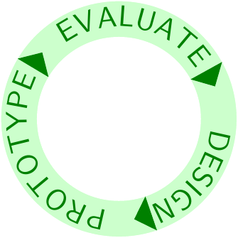
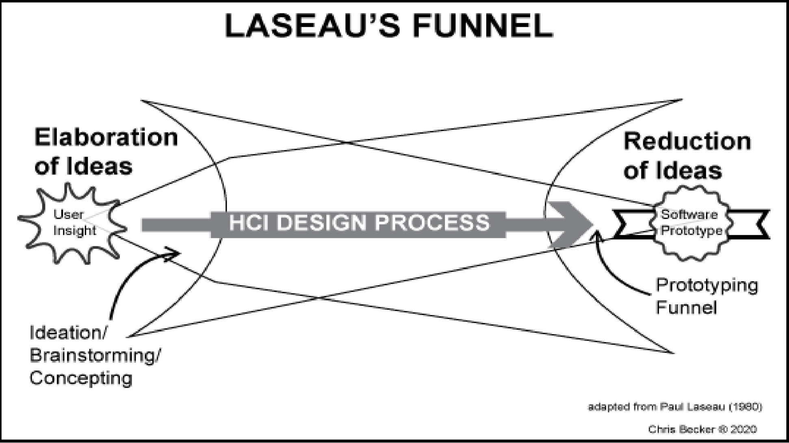
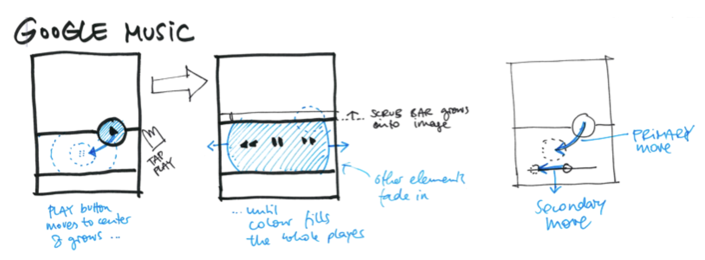

HCI:
Prototyping
2025-03-06
Week EIGHT
Today
- Q and A from last time
- Naheel Jawaid recap
- Nitya Nambisan recap
- Design critique (Maggie)
- Discussion (Nikki)
- Prototyping
Q and A from last time
Naheel Jawaid recap
Naheel Jawaid
- Currently a UX designer at Google
- Plans to start own company soon
- Gave an engaging talk at UX Design club
- Offers free design school!
Four things you do
- Product thinking
- Interaction design
- Visual design
- Communication
Example: AirBnB vs CraigsList
Your portfolio
… must prove you can do these four things
More from Naheel
- Schools set standards too low
- Show your work to industry people
- Pick one thing and go deep—keeping all doors open means you’ll be last in line at each door
- If you’re not getting offers, concentrate on doing good work—offers will emerge
- ARglasses example—constraints and landscape
Recommendations
- tools: Protopie and Origami
- portfolios: thereal.kim and rauno.me/craft
Nitya Nambisan recap
Design critique (Maggie)
Discussion (Nikki)
Note: discussion questions are worth more now, two points instead of one. The subtractions this week were more of a warning than a consequence. Perfunctory items will receive less credit in future.
Prototyping
I teach a course on this topic and a couple of you are in that course! What do you think are the most important things to say about prototyping after seven weeks of it?
Old (but still relevant) discussion questions
Where do prototypes fit?

How many kinds of prototypes are there?
I claim there are only two: prototypes for contention and prototypes for refinement. Of course, that raises the question of where Wizard of Oz prototypes fit into that dichotomy.
How many kinds of prototypes do you believe there are?
What is the purpose of different levels of fidelity?
Do different companies have different prototyping processes?
A VP of Oracle Medical Systems told me that his customers don’t want to see lofi prototypes at all. They want their branding in everything they see.
A guest speaker from ExxonMobil told my other class that he wants to see paper and pencil sketches or whiteboard sketches.
Wizard of Oz
I disagree with the book that this method is rare. I saw a demo of it yesterday for a study of new VR technology that is not yet implemented. The designers are trying to decide which technology to implement, so they’re doing a Wizard of Oz study of five possibilities.
Misinformation in affordances
A previous student (Christina Jia) pointed out that this can occur anywhere, not just doors. Can we think of some examples?
Is affordance only relevant as an influence?
Well, is it?
Do designers bear responsibility for privacy?
What if privacy conflicts with engagement?
How much information should affordances share?
Can there be too much? Too little?
Do people make prototypes that require different skills?
What about physical prototypes? (I’ve seen plenty for a wide assortment of reasons—can you imagine some of the kinds and some of the reasons?)
Prototyping
All you need is here

A view from Becker (2020)

lofi from Buxton (2007)

lofi and hifi from Buxton (2007)

Sketch but Hifi

What can you refine?
- Color
- Typography
- Layout
- Animation
Prototyping tools
- Components
- Design Systems
Readings
Readings last week include Hartson and Pyla (2019): Ch 15, 16, 17, Norman (2013): Ch 3, 4
Readings this week include Hartson and Pyla (2019): Ch 20
Assignments
Milestone 3
References
END
Colophon
This slideshow was produced using quarto
Fonts are League Gothic and Lato